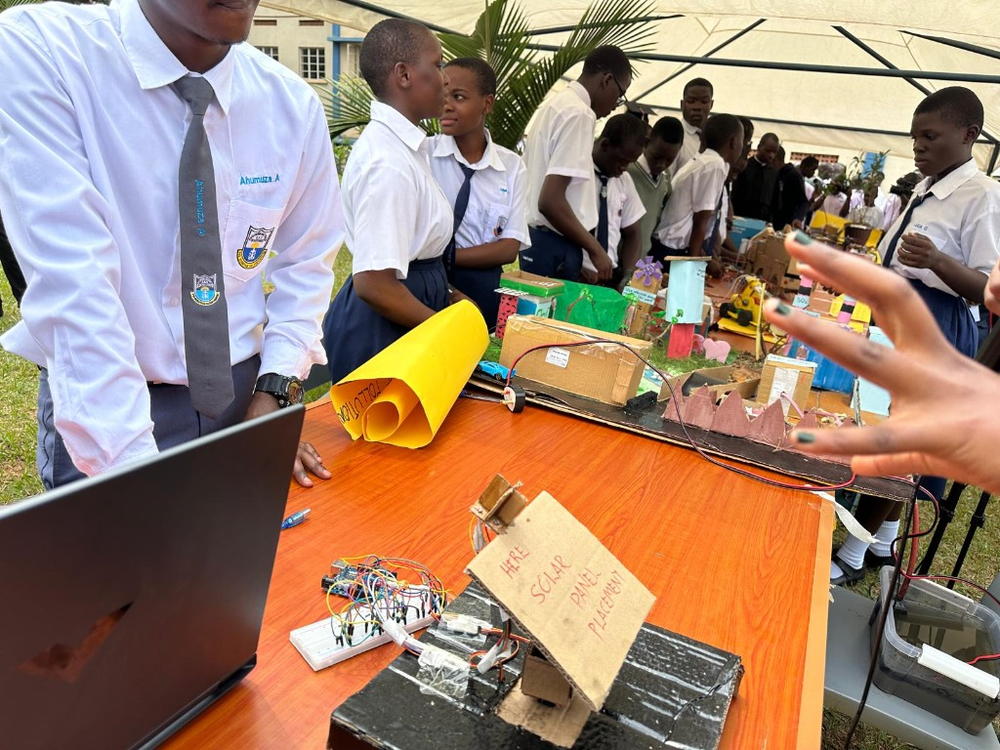

Areas of Operation
Uganda
Uganda is where the Jdiobe STEM Foundation began. We work directly with schools, teachers, and communities to remove the practical barriers that keep capable students out of science and engineering.
- 0
- Students Supported
- 0
- Scholarships Awarded
- 0
- Mentorship & Training Programs
- 0
- Education & Industry Partnerships
On the ground
What our work in Uganda looks like
Scholarships
Tuition, materials, and travel support so cost is never the reason a student stops.
Classroom & lab
Practical workshops that connect the syllabus to real tools and real problems.
Mentorship
Local educators and STEM professionals walking with each cohort through the year.
Innovation
Student-led builds in robotics, assistive technology, and sustainable design.

Programme
Hands-on STEM education
Workshops and school partnerships that put equipment in students' hands. Learners move from theory to circuits, sensors, and structures they build and test themselves.
- School-based practical sessions and science fairs
- Teacher training and shared teaching materials
- Project kits built from accessible, local materials

Programme
Student-led innovation
Teams identify a problem in their own community and build toward it — assistive devices, robotics, translation tools, environmental monitoring. The brief is always local.
Explore the projectsLooking ahead
Where we are focusing next in Uganda
Deepening what already works, and extending it to more schools and districts.
- More partner schools per district
- Expanded scholarship intake
- Teacher training and shared curriculum
- University and industry pathways
Support a student in Uganda
Your support goes directly into scholarships, equipment, and mentorship for students who already have the ambition.